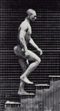
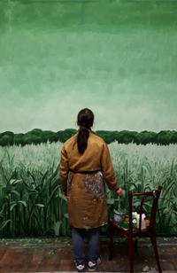
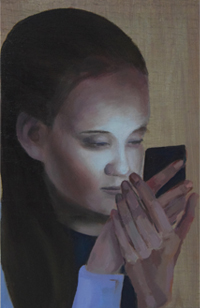
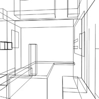
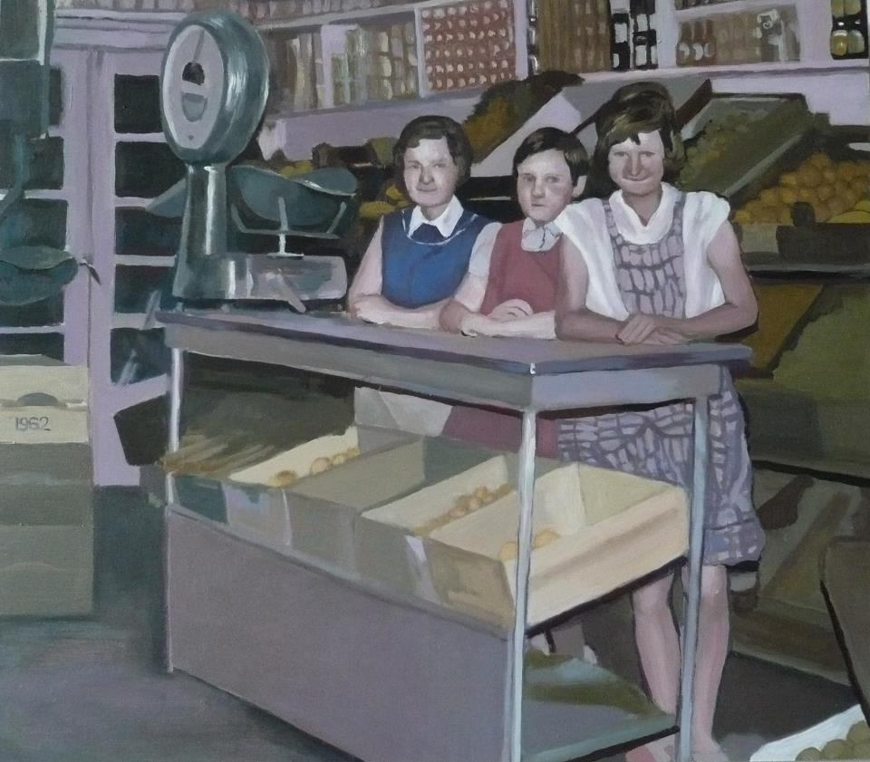

Traplopen in de tijd

Muurschildering W2Fabriek
Dat Wat Blijft

Schilderij voor de Muntel
Stillevens
Tussenpoos 2

In dialoog

Solotentoonstelling Museum Slager
Tussenpoos

Koningsportret

Het bos en de familie

Schilderijen vanaf 1997-heden
De Firma Broekman

Serie schilderijen uit project 'De Firma Broekman'.
Spiegeltent v/d Heuvel

Een geschilderd groepsportret van een wijk in Breda.
Puck

Serie portretten over het opgroeien van Puck, vanaf 2000-heden